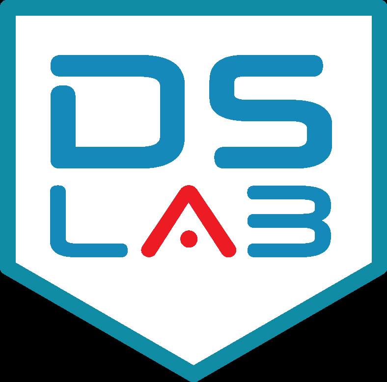

Apuntes de Optimización y Análisis de Redes
Prefacio

La optimización matemática y el análisis de redes constituyen dos de las ramas más dinámicas y aplicadas de las matemáticas modernas. En un mundo cada vez más interconectado y dependiente del análisis de datos para la toma de decisiones, la capacidad de modelar sistemas complejos, optimizar recursos limitados y analizar la topología de flujos de información se ha convertido en una competencia fundamental para matemáticos, científicos de datos y profesionales de la investigación operativa. Este libro está diseñado para proporcionar una comprensión profunda, rigurosa y práctica de estas técnicas, sirviendo de guía de estudio para la asignatura de Optimización y Análisis de Redes en el Grado en Matemáticas.
A lo largo de los capítulos, exploraremos un recorrido metodológico completo. En la primera parte, nos sumergiremos en la optimización continua, analizando la optimización no lineal desde sus bases algorítmicas univariantes y multivariantes, el formalismo teórico del análisis convexo y las condiciones fundamentales de optimalidad (KKT), hasta su implementación práctica en problemas cuadráticos y de ciencia de datos mediante CVXPY. En la segunda parte, trasladaremos nuestro enfoque a las estructuras discretas de redes, resolviendo problemas clásicos de camino mínimo, flujos máximos, emparejamientos y enrutamiento óptimo (TSP) empleando la librería NetworkX.
El objetivo de este texto es doble: por un lado, asentar los fundamentos algebraicos, analíticos y geométricos que justifican la existencia y propiedades de los óptimos y los flujos; por otro, dotar al lector de las destrezas de programación para modelar y resolver de forma eficiente problemas del mundo real. Al finalizar esta obra, habrás adquirido un criterio sólido para analizar la complejidad de un problema de decisión, seleccionar el algoritmo idóneo para su resolución e interpretar los resultados con sentido crítico.
Filosofía pedagógica del volumen
Siguiendo el enfoque de nuestra obra de referencia, la filosofía de estos apuntes se sustenta en un método “teórico-práctico” sin concesiones. Creemos firmemente que la labor computacional y el desarrollo de código no deben reducirse a una mera aplicación ciega de funciones o recetas preestablecidas. El verdadero potencial de un matemático reside en comprender el porqué detrás de cada paso algorítmico, el comportamiento de las restricciones en el plano geométrico y la estructura algebraica que garantiza la convergencia, tal y como se promueve en los tratados clásicos de la disciplina (Hillier y Lieberman 2010).
Es por ello que cada concepto se introduce motivando su necesidad histórica y práctica, se formaliza mediante teoremas y lemas detallados, y finalmente se traduce a código ejecutable en Python, promoviendo una simbiosis natural entre el rigor teórico y la destreza computacional.
¿Qué aprenderás con este libro?
Al completar este volumen, habrás desarrollado habilidades clave para:
- Modelar problemas complejos de decisión y redes utilizando variables de decisión continuas, enteras y binarias.
- Analizar la convexidad de funciones y conjuntos para garantizar la existencia de óptimos globales.
- Resolver e interpretar sistemas de optimalidad mediante las condiciones de Karush-Kuhn-Tucker (KKT).
- Implementar modelos de optimización robustos en Python utilizando la librería de optimización convexa CVXPY.
- Manipular y analizar redes complejas mediante la librería NetworkX, comprendiendo la eficiencia computacional de los algoritmos implementados.
- Formular e interpretar los problemas duales asociados a caminos mínimos y flujos en redes, relacionando las variables duales con potenciales nodales y tensiones.
- Diseñar y evaluar heurísticas constructivas y de mejora local (como 2-opt) y algoritmos de aproximación (como Christofides) para problemas NP-duros.
Este libro presenta el material teórico y práctico de la asignatura de Optimización y Análisis de Redes del Grado en Matemáticas de la Universidad Rey Juan Carlos. Su contenido está estrechamente vinculado con las asignaturas de Álgebra Lineal, Cálculo Multivariante, Programación y Optimización Lineal.
Es altamente recomendable que los alumnos dominen los conceptos básicos de espacios vectoriales, matrices totalmente unimodulares, derivabilidad multivariante (gradientes, jacobianos y hessianas) y los fundamentos de la programación lineal (método Símplex y dualidad clásica).
Víctor Aceña Gil es graduado en Matemáticas por la UNED, máster en Tratamiento Estadístico y Computacional de la Información por la UCM y la UPM, doctor en Tecnologías de la Información y las Comunicaciones por la URJC y profesor del departamento de Informática y Estadística de la URJC. Miembro del grupo de investigación de alto rendimiento en Fundamentos y Aplicaciones de la Ciencia de Datos, DSLAB, de la URJC. Pertenece al grupo de innovación docente, DSLAB-TI.
Antonio Alonso Ayuso es catedrático de Universidad en el área de Estadística e Investigación Operativa del departamento de Informática y Estadística de la Universidad Rey Juan Carlos. Es especialista en optimización matemática continua, entera y estocástica, con amplia experiencia en la resolución de problemas de redes, logística y toma de decisiones bajo incertidumbre.

Esta obra está bajo una licencia de Creative Commons Atribución-CompartirIgual 4.0 Internacional.